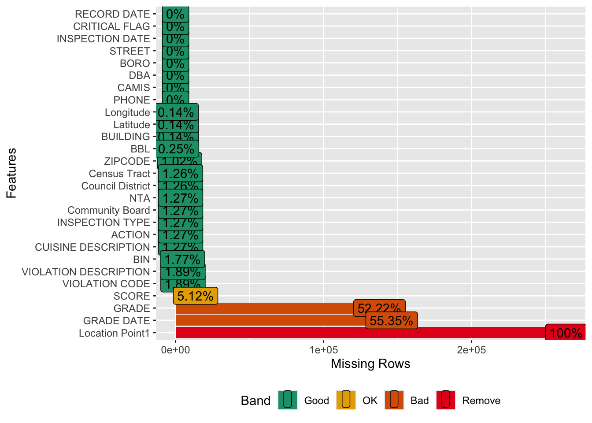

Code
library(tidyverse)
library(ggrepel)
library(DataExplorer)
#library(redav)
restaurant<-read_csv("~/Desktop/Columbia/EDAV/EDAV Final Project/DOHMH_New_York_City_Restaurant_Inspection_Results_20241210.csv")For this project, we use three datasets that provide insights into different aspects of restaurant and food-related data.
We utilize the DOHMH New York City Restaurant Inspection dataset from the NYC OpenData library. This dataset includes details on all sustained or pending violation citations from full or special program inspections conducted within three years prior to the most recent inspection. The data covers restaurants and college cafeterias that are actively operating as of the RECORD DATE (the date the data was pulled).
Key points about this dataset: - This is a huge data set containing about 260,000 observations of 27 variables. The data is updated daily according to the description of the data.
Each violation record is associated with an inspection, and establishments with multiple violations will have repeated fields for each violation.
Establishments are uniquely identified by their CAMIS (record ID) number.
Restaurants that have started operations or gone out of business within the dataset period are included only if they were active on the RECORD DATE.
Records also include restaurants applying for permits but not yet inspected and inspections resulting in no violations.
Restaurants with an inspection date of “1/1/1900” are new establishments awaiting inspection.
Restaurants with no violations are represented by a single row coded as having no violations in the ACTION field.
For the analysis of the most popular fast food chains, we use a dataset that provides nationwide data for the United States, not limited to New York. This dataset is sourced from Passby Blog’s Top Fast Food Chains Foot Traffic, offering insights into consumer behavior and fast food chain popularity across the country. We build this dataset manually.
To explore customer satisfaction, we use data from the American Customer Satisfaction Index (ACSI). This dataset evaluates customer satisfaction levels across various restaurant types and food delivery services, providing valuable insights into consumer preferences and trends.
We build this dataset manually.
The dataset processing steps include the following: 1. Removing records with missing values in key features, such as restaurant names, inspection dates, and grades. 2. Converting categorical variables into factors to facilitate visualization. 3. (Optional) Creating additional features to enhance the analysis.
library(tidyverse)
library(ggrepel)
library(DataExplorer)
#library(redav)
restaurant<-read_csv("~/Desktop/Columbia/EDAV/EDAV Final Project/DOHMH_New_York_City_Restaurant_Inspection_Results_20241210.csv")Get a general understanding of the data.
glimpse(restaurant)Rows: 263,821
Columns: 27
$ CAMIS <dbl> 50159940, 50144187, 50156071, 50146315, 501600…
$ DBA <chr> "BIG O CAFE", "LA BARRA", "BAR GIACOSA CORP", …
$ BORO <chr> "Manhattan", "Manhattan", "Manhattan", "Brookl…
$ BUILDING <chr> "102", "501", "268", "1116", "3119", "617", "3…
$ STREET <chr> "RIVERS EDGE ROAD", "WEST 30 STREET", "6 AVE…
$ ZIPCODE <dbl> 10035, 10001, 10014, 11216, 11101, 11222, 1003…
$ PHONE <chr> "9148824277", "6464951242", "2129823300", "347…
$ `CUISINE DESCRIPTION` <chr> NA, NA, NA, NA, NA, NA, "Other", NA, NA, NA, N…
$ `INSPECTION DATE` <chr> "1/1/00", "1/1/00", "1/1/00", "1/1/00", "1/1/0…
$ ACTION <chr> NA, NA, NA, NA, NA, NA, "No violations were re…
$ `VIOLATION CODE` <chr> NA, NA, NA, NA, NA, NA, NA, NA, NA, NA, NA, NA…
$ `VIOLATION DESCRIPTION` <chr> NA, NA, NA, NA, NA, NA, NA, NA, NA, NA, NA, NA…
$ `CRITICAL FLAG` <chr> "Not Applicable", "Not Applicable", "Not Appli…
$ SCORE <dbl> NA, NA, NA, NA, NA, NA, NA, NA, NA, NA, NA, NA…
$ GRADE <chr> NA, NA, NA, NA, NA, NA, NA, NA, NA, NA, NA, NA…
$ `GRADE DATE` <chr> NA, NA, NA, NA, NA, NA, NA, NA, NA, NA, NA, NA…
$ `RECORD DATE` <chr> "12/10/24", "12/10/24", "12/10/24", "12/10/24"…
$ `INSPECTION TYPE` <chr> NA, NA, NA, NA, NA, NA, "Smoke-Free Air Act / …
$ Latitude <dbl> 40.78958, 40.75213, 40.72932, 40.68639, 40.754…
$ Longitude <dbl> -73.92997, -74.00115, -74.00236, -73.95453, -7…
$ `Community Board` <dbl> 111, 104, 102, 303, 401, 301, 112, 301, 101, 3…
$ `Council District` <chr> "08", "03", "03", "36", "26", "33", "10", "34"…
$ `Census Tract` <chr> "024000", "009900", "006500", "022900", "00510…
$ BIN <dbl> 1085876, 1089323, 1008297, 3056579, 4007883, 3…
$ BBL <dbl> 1018190010, 1007020010, 1005260016, 3019740025…
$ NTA <chr> "MN99", "MN13", "MN23", "BK69", "QN68", "BK76"…
$ `Location Point1` <lgl> NA, NA, NA, NA, NA, NA, NA, NA, NA, NA, NA, NA…#summary(restaurant)
colnames(restaurant) [1] "CAMIS" "DBA" "BORO"
[4] "BUILDING" "STREET" "ZIPCODE"
[7] "PHONE" "CUISINE DESCRIPTION" "INSPECTION DATE"
[10] "ACTION" "VIOLATION CODE" "VIOLATION DESCRIPTION"
[13] "CRITICAL FLAG" "SCORE" "GRADE"
[16] "GRADE DATE" "RECORD DATE" "INSPECTION TYPE"
[19] "Latitude" "Longitude" "Community Board"
[22] "Council District" "Census Tract" "BIN"
[25] "BBL" "NTA" "Location Point1" Check missing data.
plot_missing(restaurant)
We can see from the graph that almost half of all the columns don’t have any missing value and another half have a very small percentage of them. Grade, Grade Date, and Location Point1 have the most missing values, especially Location Point1 which is literally an empty column. This might be because it is left for use to incorporate with interactive maps. For the purpose of this project we can safely remove this column. More than half of the restaurants in this data are missing their Grade and Grade Date data. This might be because the Grade, which depends on adjudication results, has not been issued to the establishment (the restaurants).
In addition, since this dataset is compiled from several large administrative data systems, it contains some illogical values that could be a result of data entry or transfer errors, which would also lead to data missing. However, with more than 260,000 restaurants on the list, we think this percentage of missing values is acceptable.